You are here:Trang Chủ / Bản đồ lãnh thổ Việt Nam qua các thời kỳ
Bản đồ lãnh thổ Việt Nam qua các thời kỳ
Bản đồ lãnh thổ Việt Nam qua các thời kỳ
Bản đồ lãnh thổ Việt Nam qua các thời kỳ là sự biến đổi không gian sinh tồn của người Việt Nam, thể hiện bởi các triều đại chính thống đã được công nhận trong lịch sử Việt Nam. Mang tính chất rất phức tạp, lúc thì bị mất lãnh thổ về các nước khác, lúc lại chinh phục được những vùng lãnh thổ mới.
Nhìn chung lại vùng lãnh thổ cốt lõi nơi phát sinh ra người Việt hiện nay là vùng châu thổ sông Hồng, sau nhiều thế kỷ đi chinh phục, đồng hóa, khai khẩn mà lãnh thổ ngày nay đã trải dài đến tận đồng bằng sông Cửu Long.
Trong bài viết này chúng tôi sẽ khái quát toàn bộ lãnh thổ Việt Nam qua ba thời Kỳ
Thời Kỳ Hồng Bàng:
Khoảng thế kỷ thứ III trước công nguyên một số sử liệu và huyền thoại cho rằng vào đầu thời Hồng Bàng, bộ tộc người Việt có lãnh thổ rộng lớn từ phía nam sông Dương Tử (Trung Quốc) đến tận vùng Thanh Hóa. Thực chất các bộ tộc Việt phía Nam sông Trường Giang không có cùng sắc tộc, chủng tộc và ngôn ngữ. Cái tên Bách Việt là chỉ chung cho các bộ tộc các nhà nước phía Nam của Trung Nguyên
Nước Văn Lang
Nước Văn Lang thuộc bộ tộc Lạc Việt đã hình thành trên vùng bình nguyên bao gồm đồng bằng sông Hồng, đồng bằng sông Mã và đồng bằng Sông Lam.
Nước Âu Lạc
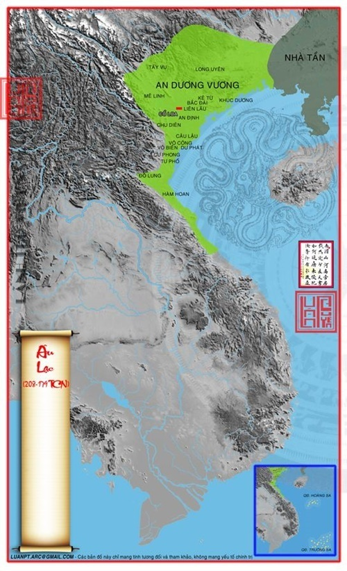Sau khi chiếm được Văn Lang, Thục Phán đã sát nhập Văn Lang vào đất của mình, nước Âu Lạc có lãnh thổ từ phía nam sông Tả Giang (Quảng Tây,Trung Quốc) kéo xuống tận dãy Hoành Sơn thuộc Hà Tĩnh ngày nay
Thời Bắc Thuộc
Nếu coi nhà Triệu (từ 207 đến năm 111 trước công nguyên) là một phần của hệ thống phân chia lịch sử thời kỳ Bắc thuộc lần 1 thì lãnh thổ nước Việt Nam thuộc nước Nam Việt của 5 đời vua nhà Triệu.
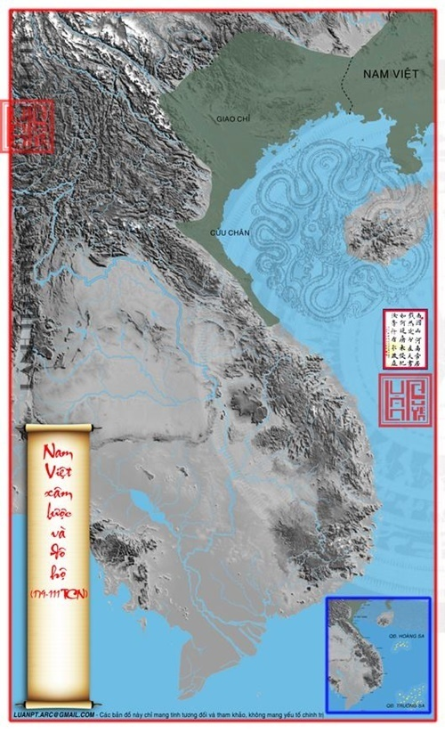Nam Việt xâm lược và đô hộ 179 – 111 TCN
Năm 111 trước công nguyên, nhà Triệu để mất nước về tay nhà Hán. Sau đó lãnh thổ nước Nam Việt cũ bị chia thành 6 quận, đồng thời xác lập thêm phần đất ở 3 quận mới là Nhật Nam, Chu Nhai, Đạm Nhĩ
Lãnh thổ của dân tộc Việt Nam thời kỳ này, trong sự cai quản của chính quyền trung ương các triều đại Trung Hoa, tiến về phía nam đến vùng Hà Tĩnh hiện nay, thỉnh thoảng các quan cai trị Giao Chỉ (hoặc Giao Châu) tiến xuống phía nam đánh Chiêm Thành và đưa thêm vùng đất từ đèo Ngang đến đèo Hải Vân vào cai trị nhưng không giữ được lâu vì sau đó Chiêm Thành thường lấy lại được.
Nhà Hán xâm lược và đô hộ 111 TCN – 34 SCN
Nước Vạn Xuân
Vạn Xuân là quốc hiệu của Việt Nam trong một thời kỳ độc lập ngắn ngủi thoát khỏi chính quyền trung ương Trung Hoa, dưới thời nhà Tiền Lý và Triệu Việt Vương. Tháng 2 năm 544, sau khi đánh bại quân nhà Lương (Trung Quốc), Lý Bí xưng là Hoàng đế và đặt tên nước là Vạn Xuân. Quốc hiệu này tồn tại từ năm 544 đến năm 602, khi nhà Tùy đánh bại Lý Phật Tử và đô hộ Việt Nam một lần nữa.
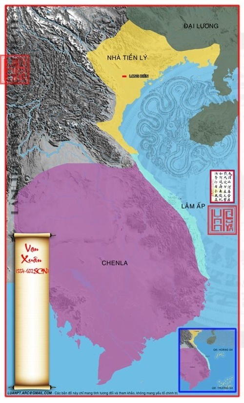Nước Vạn Xuân 554 – 602
Lãnh thổ Việt Nam Thời phong kiến tự chủ
Sau khi Khúc Thừa Dụ tự xưng là Tiết độ sứ của Tĩnh Hải quân năm 905, Việt Nam bắt đầu thời kỳ độc lập tự chủ. lãnh thổ Tĩnh Hải quân gồm 12 châu
Tĩnh Hải Quân
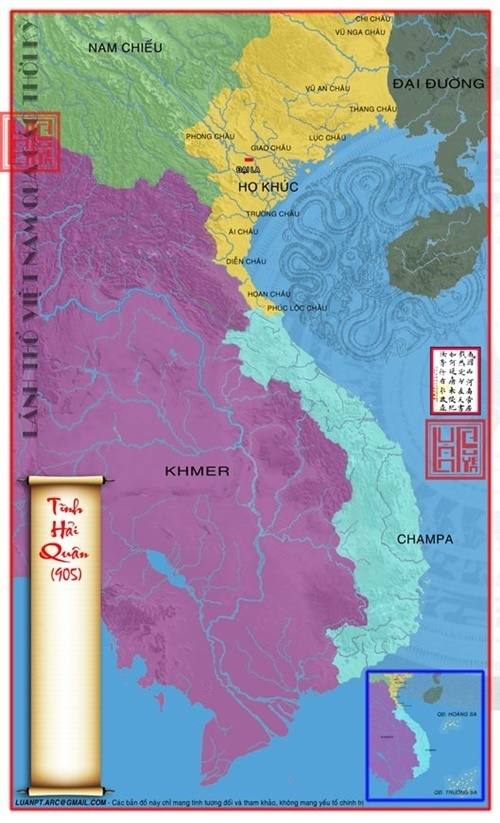Tĩnh Hải Quân 905
Việt Nam chính thức vào kỷ nguyên độc lập từ khi Ngô Quyền đánh bại nhà Nam Hán vào năm 938. Tuy nhiên lãnh thổ bị co lại chỉ còn 8 châu: Giao, Lục, Phúc Lộc, Phong, Trường, Ái, Hoan, Diễn. 4 châu bị nhà Nam Hán chiếm là Thang, Chi, Vũ Nga và Vũ An.
Đại Cồ Việt
Năm 968, Đinh Tiên Hoàng đặt quốc hiệu trở lại sau hơn 400 năm, là Đại Cồ Việt
Đại Cồ Việt 968
Năm 1014, tướng nước Đại Lý là Đoàn Kính Chí đem quân vào chiếm đóng châu Vị Long và châu Đô Kim (nay thuộc Tuyên Quang), vua Lý Thái Tổ sai con là Dực Thánh Vương đi đánh dẹp, quân Đại Lý đại bại, nhân cơ hội đó nhà Lý sáp nhập luôn khu vực ngày nay là Hà Giang vào Đại Việt.
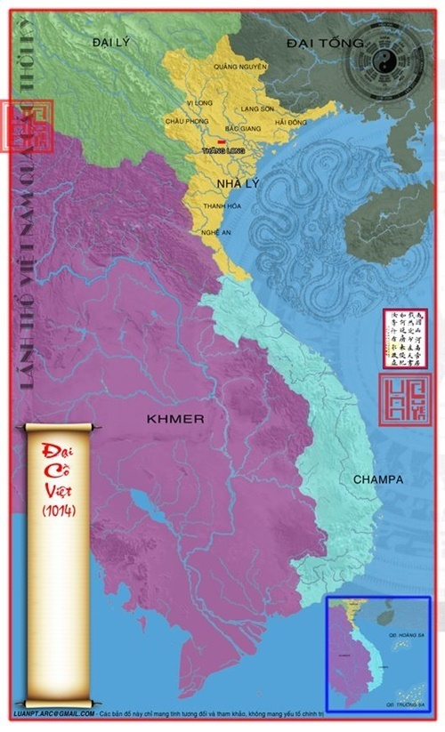Lanh thổ Việt Nam thời Đại Cồ Việt 1014
Đại Việt
Sau đó Lý Thái Tổ đổi tên nước là Đại Việt năm 1054
Vào Năm 1069, vua Lý Thánh Tông nam tiến đánh nước Chiêm Thành và bắt được vua Chiêm lúc bấy giờ là Chế Củ (Jaya Rudravarman), đem về kinh đô Thăng Long. Để được tha mạng vua Chiêm đã phải cắt các vùng đất phía bắc của Chiêm Thành gồm ba châu là: Bố Chính, Ma Linh, Địa Lý cho nước Đại Việt. Những châu ấy ngày nay ở địa phận các huyện Quảng Ninh, Quảng Trạch, Bố Trạch, Tuyên Hoá, Lệ Thuỷ tỉnh Quảng Bình và huyện Bến Hải tỉnh Quảng Trị.
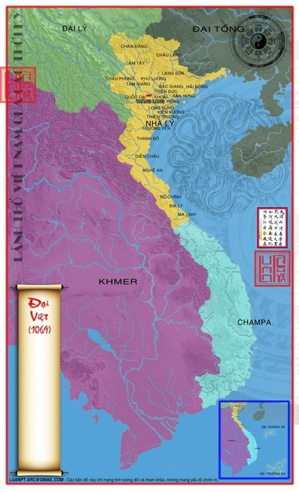Lãnh thổ nước Đại Việt 1069
Năm 1159, nhân khi nước Đại Lý suy yếu, vua Lý Anh Tông và Tô Hiến Thành đã tiến hành thu phục vùng đất của các tù trưởng dân tộc thiểu số người Thái ở bắc Yên Bái, nam Lào Cai vào lãnh thổ Đại Việt.
Việt Nam thời nhà Trần năm 1306 vua nước Chiêm Thành là Chế Mân (Jaya Simhavarman) đã cắt đất hai châu Ô và Rí cho vua Trần Anh Tông của Đại Việt để làm sính lễ cưới Huyền Trân công chúa, vùng đất mà ngày nay là phía nam Quảng Trị và Huế. Biên giới phía nam của Đại Việt lúc này tiến đến đèo Hải Vân.
Đại Ngu
Đại Ngu là quốc hiệu Việt Nam thời nhà Hồ (1400 – 1407). Quốc hiệu Đại Việt được đổi thành Đại Ngu tháng 3 năm 1400 khi Hồ Quý Ly lên nắm quyền
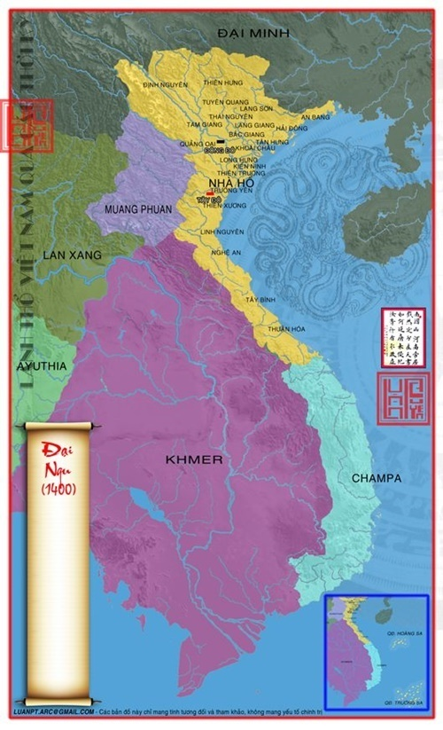Lãnh thổ nước Đại Ngu 1400
Thời kỳ bị Pháp xâm lăng và đô hộ
Năm 1859 thực dân Pháp đánh thành Gia Định
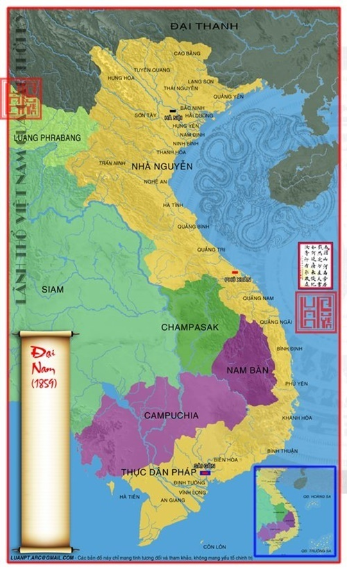Lãnh thổ Việt Nam năm 1859
Hòa ước Nhâm Tuất (1862) buộc triều đình nhà Nguyễn nhượng 3 tỉnh Nam Kỳ là Biên Hòa, Gia Định, Mỹ Tho cho Pháp. Tiếp sau đó tỉnh Hà Tiên, Châu Đốc, Vĩnh Long cũng bị sát nhập nốt vào lãnh thổ bảo hộ của Pháp.
Năm 1870, Pháp ký với Campuchia hiệp định phân định biên giới.
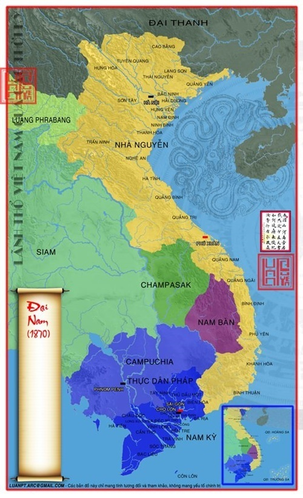Đại Nam 1870
Năm 1874, Pháp ký với Việt Nam Hòa ước Giáp Tuất (1874) công nhận sự thống trị của Pháp với toàn Nam Kỳ.
Hòa ước Quý Mùi, 1883 được ký, Việt Nam mất một phần Trung Kỳ và toàn bộ Bắc Kỳ vào tay Pháp. Việt Nam cũng mất quyền tự quyết về đối ngoại vào tay Pháp
1884 Hòa ước Giáp Thân được ký, Việt Nam chính thức trở thành thuộc địa của Pháp
Năm 1887 người Pháp nhân danh nước Bảo hộ triều đình Huế ký Hiệp ước Pháp-Thanh nhường một dải đất cho nhà Thanh. Sông Dương Hà (sông An Nam Giang) trước kia là đường biên giới nay lùi biên giới xuống phía nam, lấy cửa sông Bắc Luân ở Hải Ninh (Móng Cái) làm địa giới.
Liên Bang Đông Dương
Năm 1893, lúc này Pháp đã thành lập liên bang Đông Dương, dựa theo địa hình đã cắt tỉnh Huaphanh (Hủa Phăn), Xiêng Khoảng giao về lãnh thổ Lào (Ai Lao).
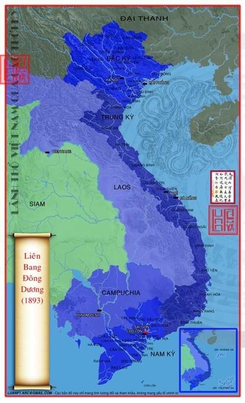Lãnh thổ Việt Nam 1893
1895, từ công ước Pháp-Thanh 1895đã đưa về phần lớn vùng đất Lai Châu, Điện Biên và một phần Lào Cai ngày nay thuộc về xứ Bắc Kỳ còn một phần đất ở bắc sông Bắc Luân thuộc về nhà Thanh. Sâm Châu và Xiêng Khoảng bị cắt cho Lào.
Năm 1893, hiệp ước Pháp-Xiêm (1893) theo đó nhượng toàn bộ vùng lãnh thổ phía Đông sông Mê Kông cho Pháp, gạt bỏ lực lượng quân sự và những ảnh hưởng của Xiêm tại vùng cao nguyên thượng sông Sêrêpôk. Vùng đất nhượng lại này bao gồm cả tỉnh Stung Treng, năm 1899 địa khu Đắc Lắc được thành lập từ Stung Treng. Năm 1904, Đắc Lắc được sáp nhập vào Việt Nam.
Lãnh thổ Việt Nam sau năm 1945
Đế quốc Việt Nam là tên chính thức của một chính phủ tồn tại 5 tháng trong lịch sử Việt Nam
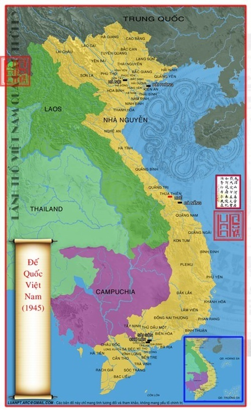bản đồ lãnh thổ Việt Nam qua các thời kỳ 68
Nước Việt Nam Dân Chủ Cộng Hòa được thành lập vào ngày 2/9/1945
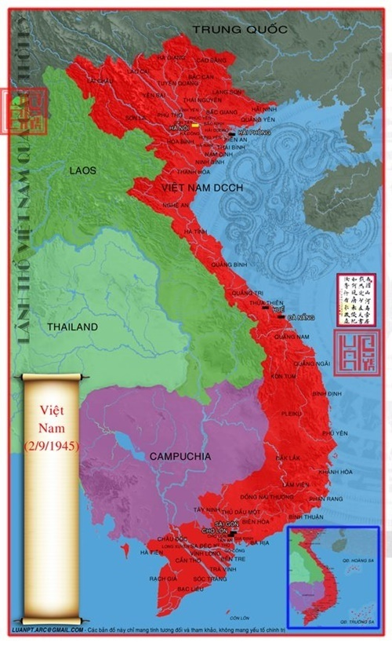bản đồ lãnh thổ Việt Nam qua các thời kỳ 69
Từ 1954 đến 1975, Việt Nam bị chia đôi tại vĩ tuyến 17 sau hiệp định Giơ-ne-vơ
bản đồ lãnh thổ Việt Nam qua các thời kỳ 70
30/4/1975 Lãnh Thổ Việt Nam hoàn toàn thống nhất như ngày nay
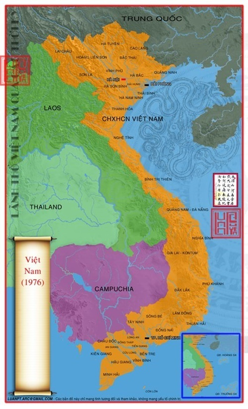Lãnh thổ Việt Nam ngày nay
Quần đảo Hoàng Sa
Việt Nam tuyên bố chủ quyền đối với Quần đảo Hoàng Sa, nhưng Hoàng Sa nay đang bị Cộng hòa Nhân dân Trung Hoa chiếm đóng từ sau Hải chiến Hoàng Sa, 1974.
Quần Đảo Trường Sa
Hiện Quần đảo Trường Sa đang bị nhiều quốc gia trong khu vực tranh chấp do có tiềm năng lớn về dầu khí và nguồn cá dồi dào. Việt Nam là quốc gia nắm giữ nhiều đảo nhất. Các quốc gia đang tranh chấp chủ quyền gồm: Việt Nam, Trung Quốc, Đài Loan,Philippines, Malaysia, Brunei.
Xem Thêm
- Vua Hàm Nghi một tâm hồn việt ở chốn lưu đày (phần 5)
- Vua Khải Định và chuyến công du sang Pháp dự hội chợ thuộc địa Marseille
- Lệ “tứ bất” của triều Nguyễn có thực sự tồn tại?
- Vua Hàm Nghi một tâm hồn việt ở chốn lưu đày (phần 3)
- Hình ảnh Vua Bảo Đại và lễ tế Đàn Nam Giao năm 1935
- Hình ảnh hiếm về nghề phát thư xưa
- Vua Hàm Nghi một tâm hồn việt ở chốn lưu đày (phần 7)
- Tình sử vua Duy Tân, đãi cát tìm người trong mộng
- Trang phục hoàng gia nhà Nguyễn
- Hồng Bàng & Văn Lang
- Âu Lạc & Nam Việt
- Bắc Thuộc lần I
- Trưng Nữ Vương
- Bắc Thuộc lần II
- Nhà Lý & Nhà Triệu
- Bắc Thuộc Lần III
- Thời kỳ xây nên tự chủ
- Nhà Ngô
- Nhà Đinh
- Nhà Tiền lê
- Nhà Lý
- Nhà Trần
- Nhà Hồ
- Nhà Hậu Trần
- Bắc thuộc lần IV
- Nhà Hậu Lê
- Nam Bắc Triều
- Trịnh Nguyễn Phân Tranh
- Nhà Tây Sơn
- Nhà Nguyễn
- Pháp Thuộc
- Việt Nam Dân Chủ Cộng Hòa
- Cộng Hòa Xã HỘi Chủ Nghĩa Việt Nam
- Lăng Thiệu Trị (Xương Lăng)
- Tình sử vua Duy Tân, đãi cát tìm người trong mộng
- Vua Duy Tân (Nguyễn Phúc Vĩnh San)
- Trang phục hoàng gia nhà Nguyễn
- Bát Trân xưa, 8 món ăn quý nhất của người Việt
- Thịt Dê và ẩm thực cung đình nhà Nguyễn
- Con số 13 bí ẩn gắn liền với cuộc đời vua Bảo Đại
- Cuộc đời thứ phi Mộng Điệp qua ảnh
- Số phận đao phủ khét tiếng thời Nguyễn